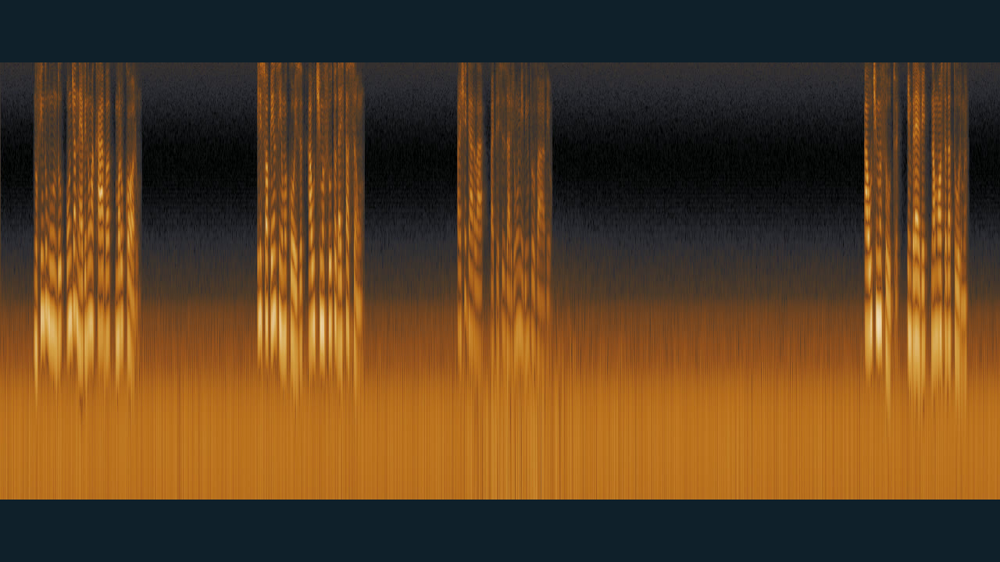
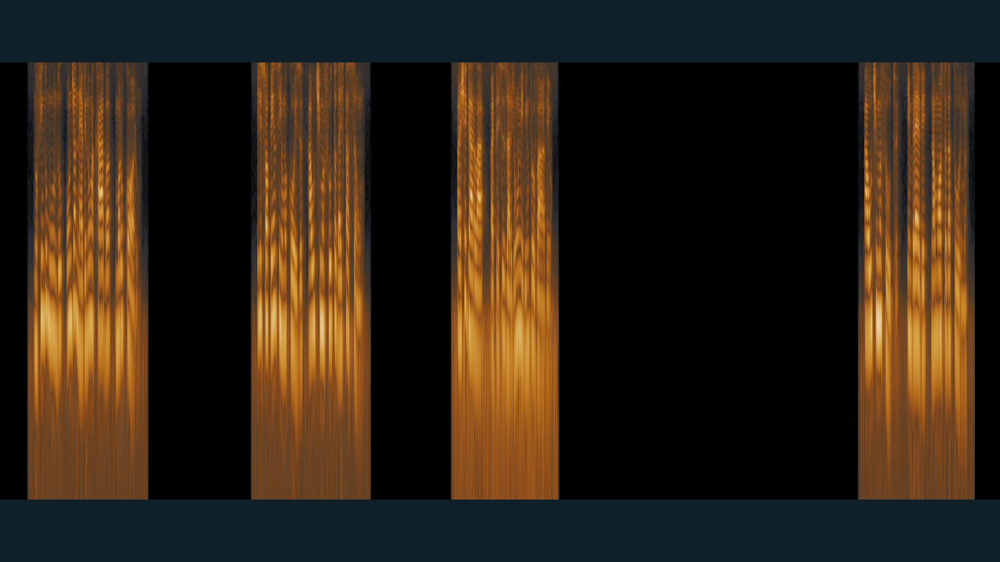

Mixagem de voz, trilha, ambiência e efeitos em uma mesa de som que roda no navegador, sem internet, sem conta e sem instalar programa. No mesmo kit, um laboratório para ver o buffering acontecer e separar buffering de cache, proxy e render de trecho.
Extraia a pasta no disco local e abra mesa.html com dois cliques. Use fone de ouvido.
Espectrograma da voz: o tempo corre da esquerda para a direita e o grave fica embaixo.


mix-v1.wav, mix-final.wav e sem-voz.wav, com pico em −1 dBFS ou abaixo, e diagnostico-aula14.txt. Créditos: imagens de Caminandes 3: Llamigos, Blender Foundation / Blender Institute, CC BY 3.0, remontadas sem o som original; locução sintetizada com Piper e voz pt_BR faber; trilha, ambiência e efeitos originais. Consulte CREDITOS.txt.